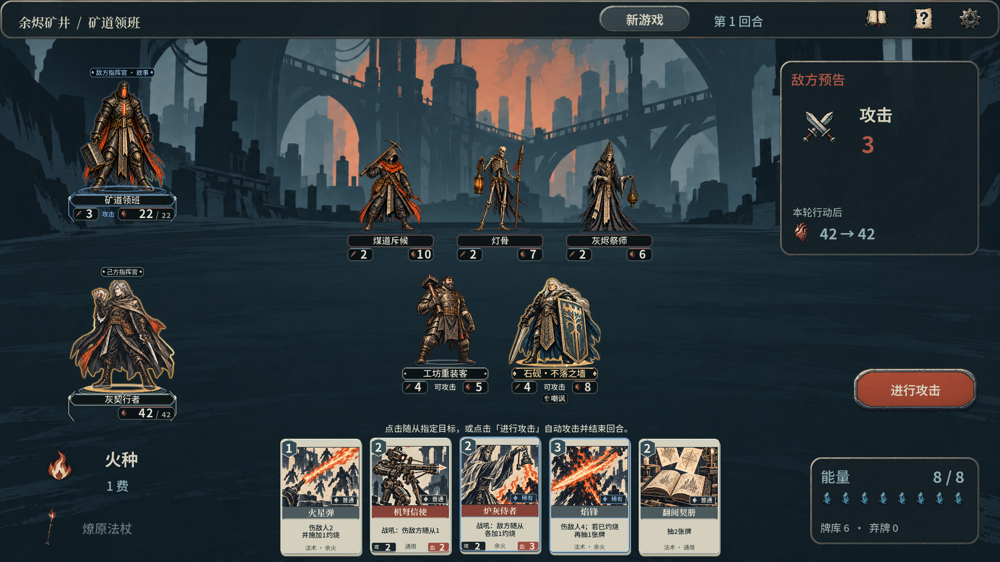
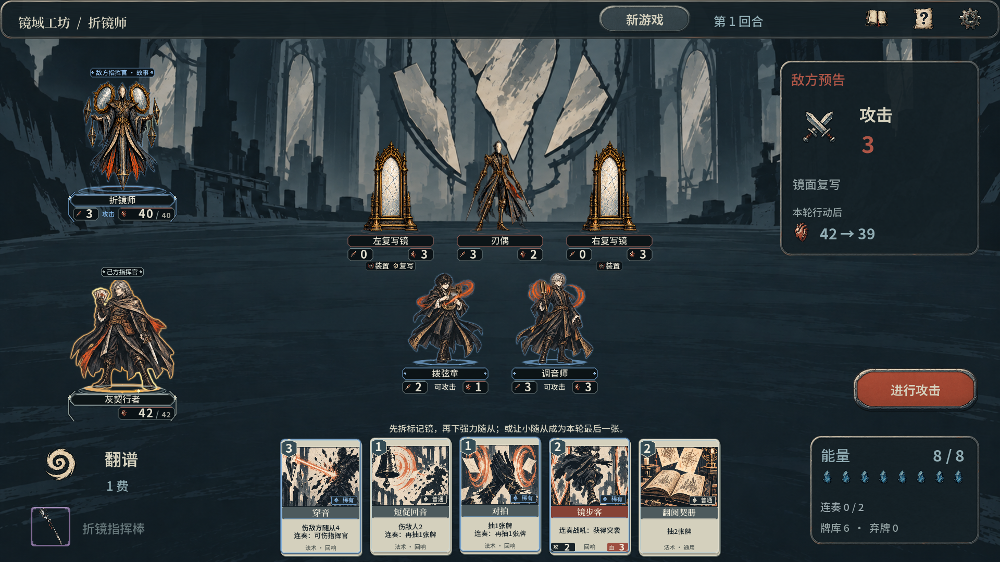
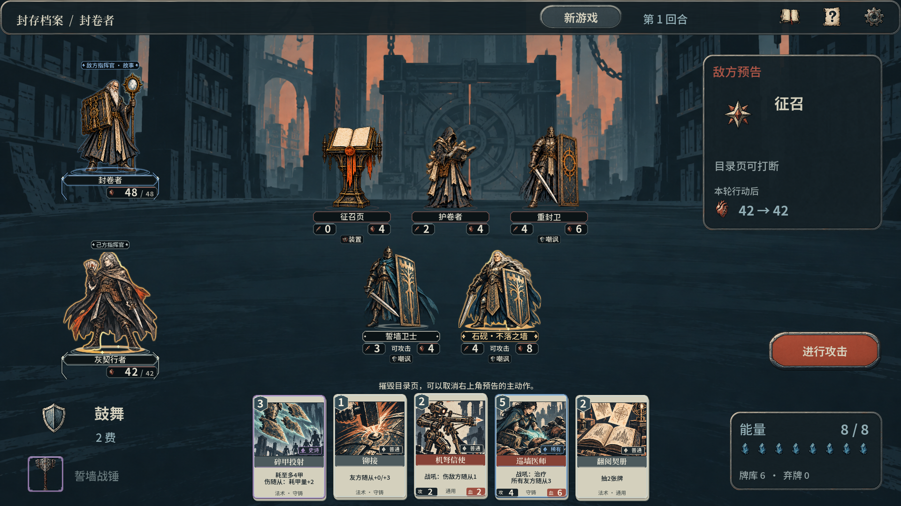

全新叙事预告 / 中文配音 / 原创配乐
灰烬之中，战局未定。
首领步步施压，留下的契牌就是反击的开始。
带回战利品，再赴下一场远征。
以契牌，改写战局
在出牌次序、随从站位与资源取舍之间寻找转机。拆解首领机关，让手中的契牌逐步改写战局。
让每次掉落，拓宽战法
掉落带来选择，构筑决定取舍。调整契牌与装备核心，升级词缀、重整攻防，把新的战法带进下一段远征。
主预告将游戏 1.1.0 实机画面与宣传原画特写、中文旁白及原创配乐剪辑呈现；战斗与构筑展示保留游戏原音。视频配有中文字幕，可通过播放器调整音量。
同一手契牌，另一种解法
让战利品，成为下一套构筑的开头。
找到值得留下的装备，与熟悉的契牌配在一起。曾经受阻的战局，也许就有了新的突破口。
留下手牌，等待转机
普通手牌跨回合保留。围绕五个随从位置布置攻守，留下关键法术，在出牌顺序与能量取舍之间，掌握属于你的时机。
20 张牌组 · 三种学派自由混搭
换一件装备，重写战法
用燎原法杖将积下的灼烧转为邻接伤害；借破城重锤以护甲换取攻势；让折镜指挥棒为符合条件的法术留下回声。
四个装备部位 · 12 件核心装备
远征止步，收获仍然留下
战败或主动撤回，已经收入行囊的战利品仍会保留。回到工坊比较装备、升级词缀与重铸，再带着新的构筑出发。
永久战利品 · 章节契牌持续解锁
48 张可收藏契牌、6 种衍生牌与十套可编辑构筑参考，让熟悉的组合继续生长。
三章远征 / 三名机制首领
深入未知，破解首领的布局。
首次通关可自选一件区域核心。
准备好新的搭配，再挑战精锐与大师。

余烬矿井
炉膛为首领供能。拆除炉膛，在余火与钢铁之间，为你的契牌打开缺口。

镜域工坊
镜面复写你刚打出的随从。击碎镜面，重新安排出手时机，打破折镜师的布局。

封存档案
目录页预告下一次主动作。读懂预兆、打断目录页，阻止封卷仪式步步推进。
原生 1920 × 1080
每张契牌，都有落子的分量。
火焰连动、传奇随从与首领机关。
14 张实机截图，点开看清每一手。
显示全部 14 张截图
把新的可能，带回下一场牌局
继续关注《灰契行者》。
在 GitHub 查看游戏介绍与宣传页更新。
你也可以为宣传仓库点亮 Star，留下反馈与建议。